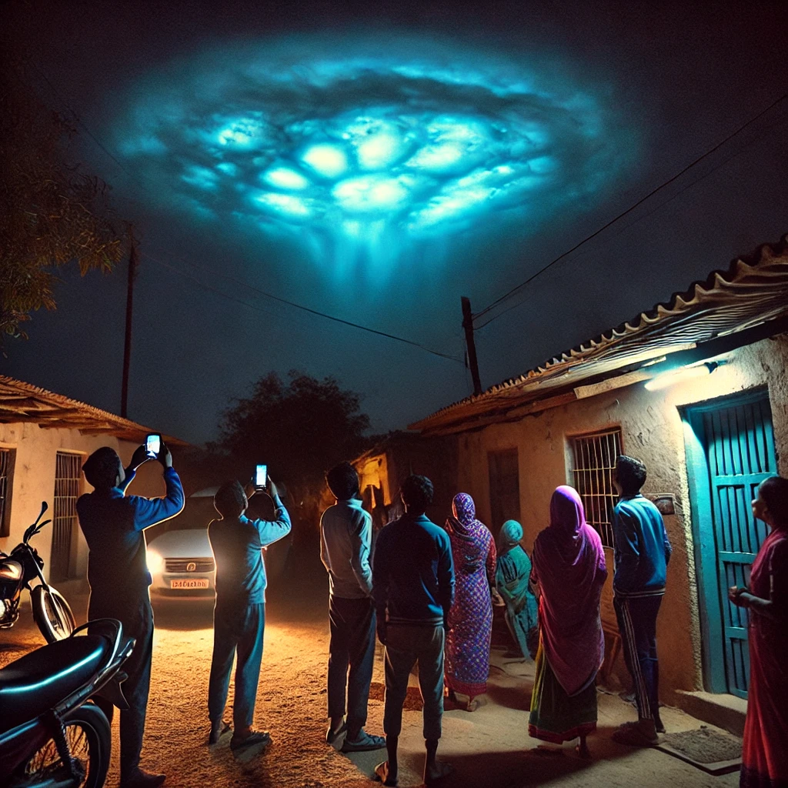

गुजरात के गांव में दिखा रहस्यमयी नीला रोशनी वाला बादल
गुजरात के कच्छ जिले के धोलावीरा गांव में रात के समय नीली रोशनी से चमकता बादल दिखा। यह 15 मिनट तक आसमान में रहा और अचानक गायब हो गया! 😲
लोगों की प्रतिक्रियाएँ:
💬 रमेशभाई पटेल: "ऐसा लगा जैसे आसमान में कोई जादू हो रहा हो!"
💬 रामजी भाई: "यह भगवान का कोई संकेत है!"
💬 डॉ. अजय मेहता (वैज्ञानिक): "यह 'एलियन स्ट्रेटोस्फेरिक क्लाउड' हो सकता है!"
यह घटना कैसे हुई?
✅ यह ब्लू ल्यूमिनसेंट क्लाउड हो सकता है, जो दुर्लभ होता है।
✅ यह चार्ज्ड इलेक्ट्रॉन्स और वायुमंडलीय घर्षण से बन सकता है।
✅ आमतौर पर यह ध्रुवीय क्षेत्रों में होता है, भारत में पहली बार देखा गया!
सोशल मीडिया पर धमाका! 📲
🔹 #BlueCloudMystery हैशटैग ट्रेंड कर रहा है।
🔹 लोग इसे एलियंस से जोड़कर देख रहे हैं! 👽
प्रशासन और वैज्ञानिकों की प्रतिक्रिया:
🔎 गुजरात मौसम विभाग: "हम इस घटना का अध्ययन कर रहे हैं।"
👮 स्थानीय प्रशासन: "यह कोई हानिकारक घटना नहीं थी।"